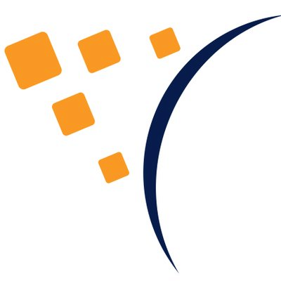
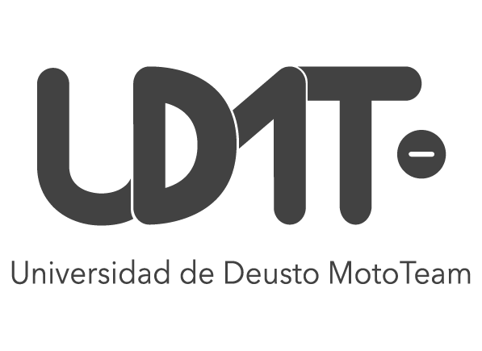

Work experience
-

2026 — Now
Electronics & Software Department
Satlantis · Bilbao
- Designing a new SSA (Space Situational Awareness) system based on a differential approach.
- Building a prototype from scratch to observe objects in orbit.
- Developing a software architecture that fits the technical challenges of the new system.
-

2023 — Now
General Manager · Electronics & Software Engineer
University of Deusto Moto Team (UDMT) · Bilbao
- Lead the electronics & software area of a team that designs and builds an electric racing motorbike for the international MotoStudent competition, under strict technical rules and tight deadlines.
- Built the telemetry system: ESP32 nodes read the CAN bus and send the data over MQTT to InfluxDB, with live dashboards in Grafana.
- Worked on the battery system and designed the rider's display.
- Designing the central PCB in KiCad, where an ESP32 connects sensors and controllers and manages the states of the bike.
- As General Manager, coordinate the work between the different areas of the team.